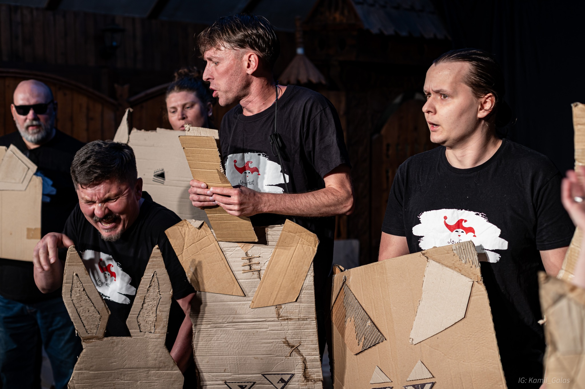
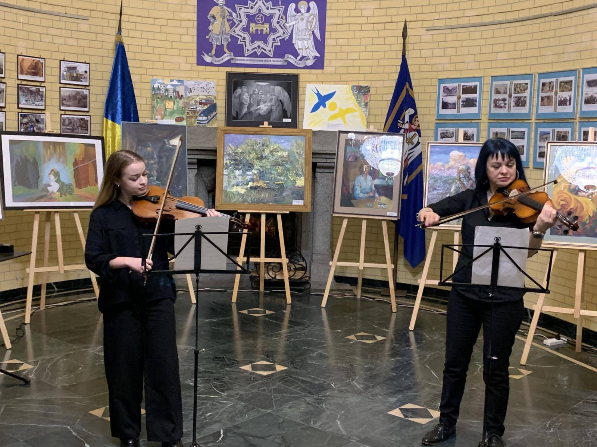
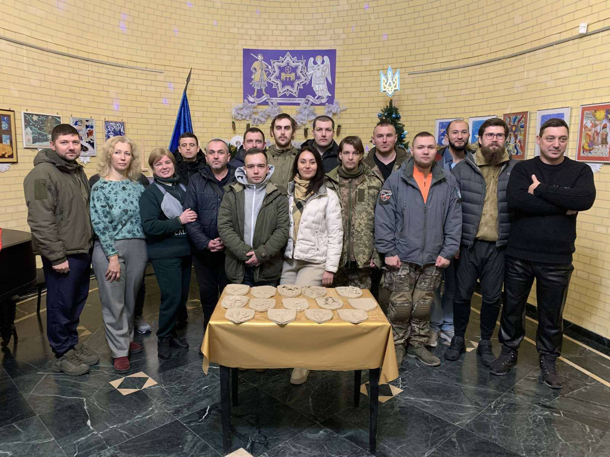
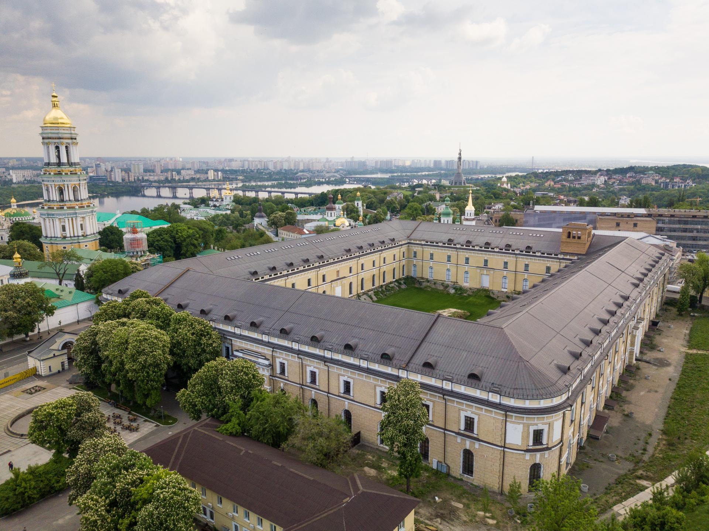
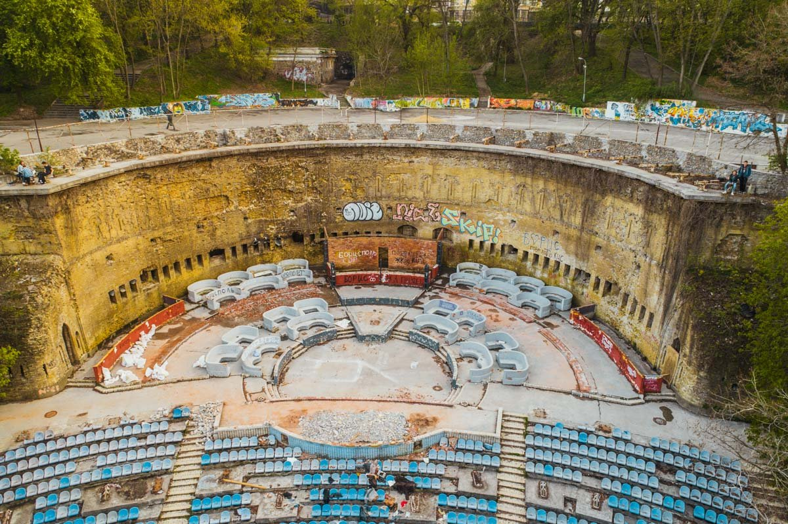
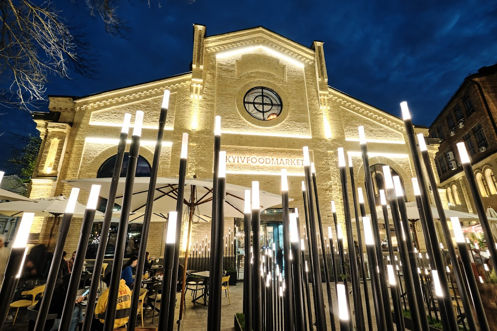

Театральні вистави
В театральній залі Національного історико-архітектурного музею "Київська фортеця" відбуваються постановки театру "Маскам Рад" як частини Міжнародного соціально-культурного проекту JoyFest

В театральній залі Національного історико-архітектурного музею "Київська фортеця" відбуваються постановки театру "Маскам Рад" як частини Міжнародного соціально-культурного проекту JoyFest

У виставкових залах Національного історико-архітектурного музею "Київська фортеця" експонуються світлини та художні роботи, присвячені подіям минулого та сьогодення

За підтримки благодійних фондів реалізуються програми для Захисників та Захисниць України, які перебувають на лікуванні у київських шпиталях, з метою покращення результатів їх соціальної та психологічної реабілітації шляхом залучення до культурно-освітнього музейного простору

Мистецький арсенал є флагманською українською інституцією культури, яка у своїй діяльності інтегрує різні види мистецтва – від сучасного мистецтва, нової музики й театру до літератури та музейної справи. Архітектурною домінантою Комплексу є споруда Старого арсеналу

Зелений театр — театр просто неба в Києві на схилах Дніпра. Елементом театру є одна з двох казематних стін колишньої Нової Печерської фортеці

Kyiv Food Market вміщує різноформатні ресторани Києва, які не мають схожих позицій меню. Це дозволило зібрати більше 20 закладів харчування в одному приміщенні на території колишнього заводу Арсенал